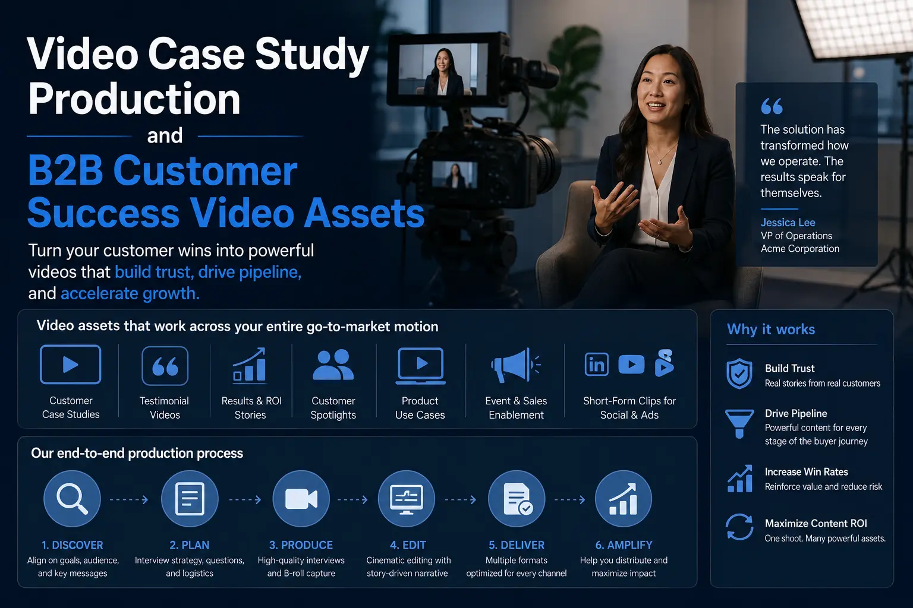
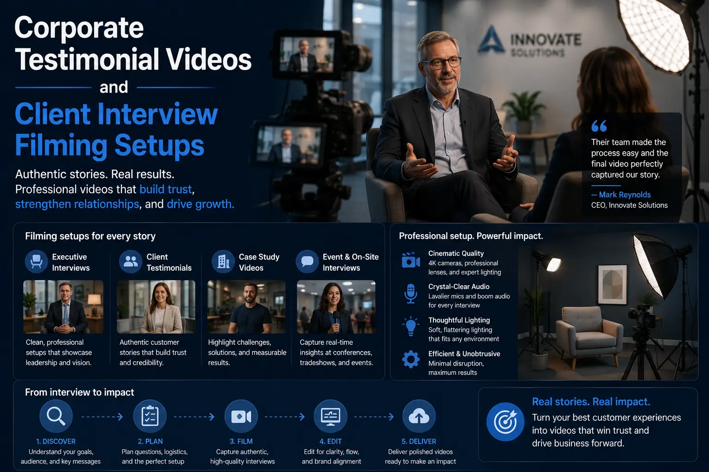

Using Hyper-Targeted Video Case Studies to Cold-Pitch and Close Enterprise Accounts
Overcoming the Trust Barrier: The Enterprise Outbound Challenge
Outbound sales in the B2B enterprise space are more challenging than ever. Decision-makers are inundated with generic cold emails, sales pitches, and PDFs. Because enterprise contracts involve high investments and risk, prospects look for proof of performance before scheduling a meeting. They want to know you have solved similar problems for similar brands.
This trust gap is difficult to bridge with text-based pitches alone. To stand out, forward-thinking B2B sales teams are shifting away from generic decks and adopting **Video Case Study Production** strategies. By presenting client stories in high-end video format, organizations can show their capability, build trust, and grab the attention of enterprise accounts.
Through structured **B2B Customer Success Video Assets** and professional **Testimonial Commercial Shoots**, companies can convert cold leads into active sales conversations.
Production Excellence: Filming the Client Story
Capturing client testimonials that resonate with corporate buyers requires technical preparation and structured interviews.
- Working with expert client review video makers. Partnering with professional **Client review video makers** ensures your videos have high production value. Clear audio, multi-camera setups, and balanced lighting are essential to keep corporate viewers engaged.
- Creating corporate proof-of-work documentation. Build structured **corporate proof-of-work documentation** that shows your actual process. Combine client interviews with B-roll of your team at work, showing how your product or service is delivered.
- High-converting enterprise sales content frameworks. To build **high-converting enterprise sales content**, keep videos short—ideally between 90 seconds and 3 minutes. Focus on clear business outcomes (e.g., efficiency gains, revenue growth) rather than general praise.
- Professional client interview filming setups. Use a quiet conference room for shoots. A professional **client interview filming setup** uses soft key lights, lapel microphones, and a B-camera to capture close-up details, keeping edits smooth and engaging.
Overcome Cold Pitch Skepticism
A short video case study links in cold emails increase response rates. Prospects are more likely to watch a 90-second client story than read a PDF deck.
De-risk the Purchase Decision
Hearing a peer explain how you resolved their problem reduces buying hesitation, helping your team overcome enterprise sales hurdles.
Build a Reusable Visual Asset
Once produced, these videos can be repurposed across landing pages, sales decks, proposal documents, and LinkedIn campaigns.
Elevate Brand Presence
High-end corporate videography builds brand authority. Showing real client facilities and operations highlights your capacity to handle scale.

The Script Architecture: Structuring Customer Success
A B2B video testimonial must follow a structured script that focuses on problem-solving, implementation, and clear results.
- The Act 1: The Challenge. Open the video by having the client explain the business pain they faced before working with you. Focus on metrics, such as lost time or inefficient operations, to define the problem.
- The Act 2: The Solution. Have the client describe the implementation phase. Highlight how your team set up the service, integrated systems, and worked with their staff, showing your operational efficiency.
- The Act 3: The Results. This is the core of **business validation video assets**. End the video with the client sharing the results. Focus on numbers—such as a 35% reduction in costs or double-digit sales growth—to prove value.
- Designing high-converting corporate testimonial videos. Keep the tone conversational. Avoid overly rehearsed scripts that sound like pitches. Authentic client statements are far more persuasive to enterprise buyers.
Enterprise Outbound Video Deployment Strategy
Integrate your customer success videos across your sales pipeline to maximize conversion.
Cold Outbound Emails
- Insert a short, personalized video link into cold emails to boost click rates.
- Use clean thumbnails showing the client's face or logo to drive clicks.
- Keep the accompanying text short, focusing on the main result.
Post-Call Follow-ups
- Send targeted video case studies to prospects immediately after your initial call.
- Align the video case study with the specific pain points discussed during the meeting.
- This reinforces your capabilities while the conversation is fresh.
LinkedIn Sales Navigator
- Share short client case study clips on LinkedIn to maintain visibility with prospects.
- Tag the client company when appropriate to build community trust.
- Encourage your sales team to share these video assets on their profiles.
Integrating Video into Enterprise Proposals
Place validation videos directly within your proposal documents to support your bid.
- Embedded video links. Embed case study video links in your digital proposals, letting procurement officers watch proof of work as they review terms.
- Highlighting industry expertise. Deliver case studies from the same vertical to show you understand the prospect's industry challenges.
- The operational walkthrough. Include short B-roll clips of your facilities or team in action to show your delivery capacity.

Conclusion
Hyper-targeted video case studies are essential tools to build trust and close enterprise accounts. By replacing static decks with **Video Case Study Production** assets that show real client success, brands can stand out.
Through structured **B2B Customer Success Video Assets**, disciplined script structures, and targeted sales placement, you can shorten sales cycles.
At The PhD Ads in Madurai, we specialize in B2B corporate videography, help brands run **Testimonial Commercial Shoots**, and produce **corporate testimonial videos** that close deals.
Key Topics
Close Enterprise Accounts with Video Proof
Ready to document your client success and build hyper-targeted video case studies? At The PhD Ads in Madurai, we produce high-end testimonials and B2B validation videos that convert prospects.
Email: team@e2o.in